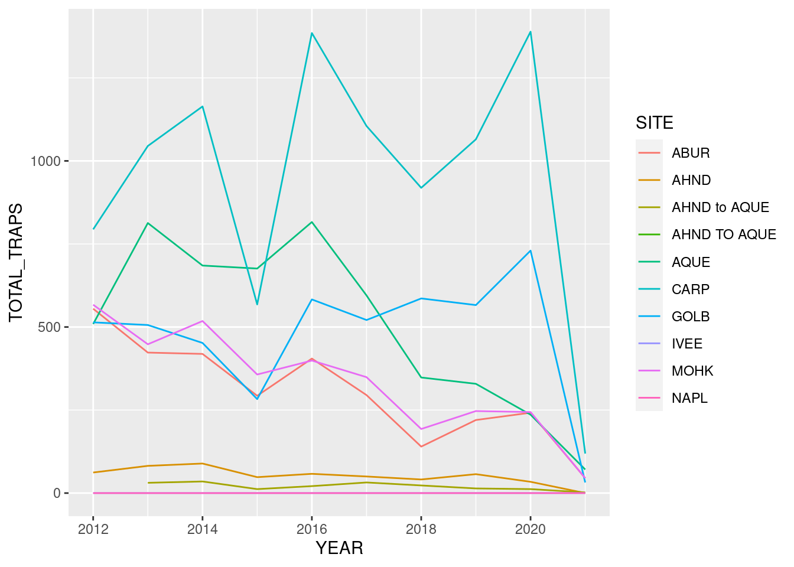
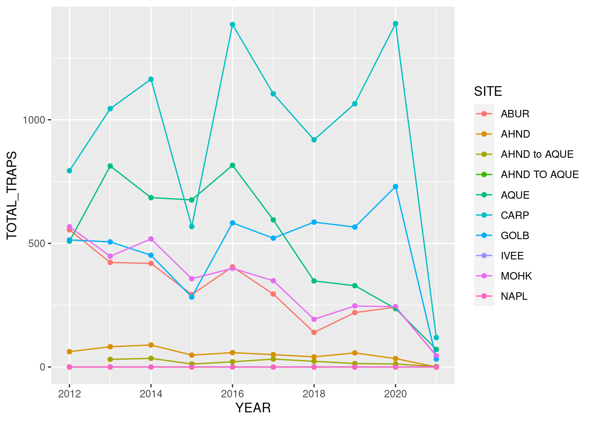
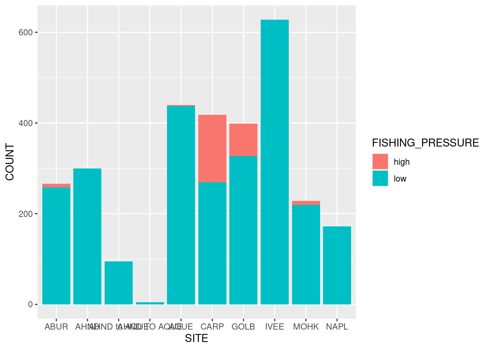
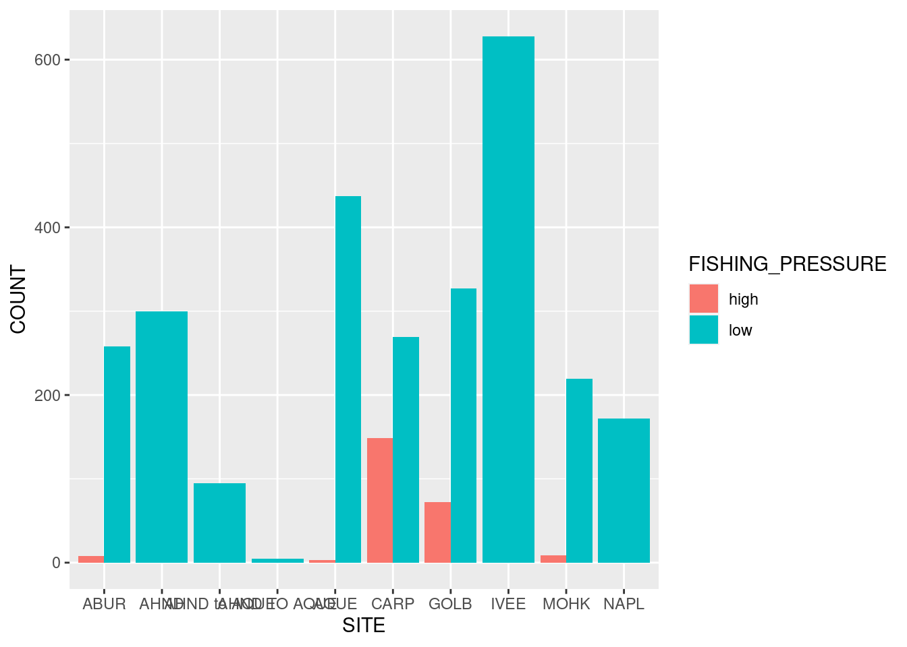
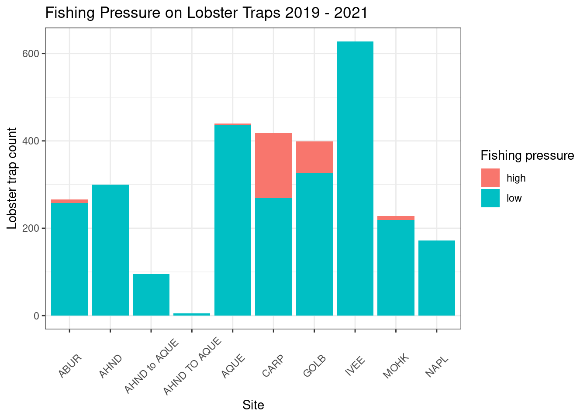

Rows: 11071 Columns: 10
── Column specification ────────────────────────────────────────────────────────
Delimiter: ","
chr (6): FISHING_SEASON, SITE, SEGMENT_START, SEGMENT_END, OBSERVER, NOTES
dbl (3): YEAR, MONTH, TRAPS
date (1): DATE
ℹ Use `spec()` to retrieve the full column specification for this data.
ℹ Specify the column types or set `show_col_types = FALSE` to quiet this message.
YEAR MONTH DATE FISHING_SEASON
Min. :2012 Min. : 1.00 Min. :2012-10-05 Length:11071
1st Qu.:2014 1st Qu.: 2.00 1st Qu.:2014-11-05 Class :character
Median :2017 Median :10.00 Median :2017-01-05 Mode :character
Mean :2016 Mean : 7.47 Mean :2017-01-09
3rd Qu.:2019 3rd Qu.:11.00 3rd Qu.:2019-02-11
Max. :2021 Max. :12.00 Max. :2021-03-11
SITE SEGMENT_START SEGMENT_END TRAPS
Length:11071 Length:11071 Length:11071 Min. :-99999
Class :character Class :character Class :character 1st Qu.: 0
Mode :character Mode :character Mode :character Median : 0
Mean : -1045
3rd Qu.: 4
Max. : 44
OBSERVER NOTES
Length:11071 Length:11071
Class :character Class :character
Mode :character Mode :character
YEAR MONTH DATE FISHING_SEASON
Min. :2013 Min. :10.00 Min. :2013-10-24 Length:32
1st Qu.:2016 1st Qu.:10.00 1st Qu.:2016-10-29 Class :character
Median :2018 Median :10.00 Median :2018-10-02 Mode :character
Mean :2018 Mean :10.06 Mean :2018-08-30
3rd Qu.:2020 3rd Qu.:10.00 3rd Qu.:2020-10-07
Max. :2020 Max. :11.00 Max. :2020-10-21
SITE SEGMENT_START SEGMENT_END TRAPS
Length:32 Length:32 Length:32 Min. :21.00
Class :character Class :character Class :character 1st Qu.:21.00
Mode :character Mode :character Mode :character Median :23.00
Mean :25.03
3rd Qu.:27.25
Max. :44.00
OBSERVER NOTES
Length:32 Length:32
Class :character Class :character
Mode :character Mode :character
`summarise()` has grouped output by 'SITE'. You can override using the
`.groups` argument.
line graph
# line plotggplot(data = lobsters_traps_summarize, aes(x = YEAR, y = TOTAL_TRAPS)) +geom_line(aes(color = SITE))

# add points to the same line plotggplot(data = lobsters_traps_summarize, aes(x = YEAR, y = TOTAL_TRAPS)) +geom_point(aes(color = SITE)) +geom_line(aes(color = SITE))

subset data to get data from 2019-2021, calculate high and low fishing pressure
`summarise()` has grouped output by 'SITE'. You can override using the
`.groups` argument.
summary(lobster_traps_fishing_pressure)
SITE FISHING_PRESSURE COUNT
Length:15 Length:15 Min. : 3.0
Class :character Class :character 1st Qu.: 40.5
Mode :character Mode :character Median :172.0
Mean :196.7
3rd Qu.:284.5
Max. :628.0
head(lobster_traps_fishing_pressure)
# A tibble: 6 × 3
# Groups: SITE [5]
SITE FISHING_PRESSURE COUNT
<chr> <chr> <int>
1 ABUR high 8
2 ABUR low 258
3 AHND low 300
4 AHND TO AQUE low 5
5 AHND to AQUE low 95
6 AQUE high 3
bar graph
# bar plotggplot(data = lobster_traps_fishing_pressure, aes(x = SITE, y = COUNT, fill = FISHING_PRESSURE)) +geom_col()

# dodged bar plotggplot(data = lobster_traps_fishing_pressure, aes(x = SITE, y = COUNT, fill = FISHING_PRESSURE)) +geom_col(position ="dodge")

beautify plot stacked bar plot
# bar plotggplot(data = lobster_traps_fishing_pressure, aes(x = SITE, y = COUNT, fill = FISHING_PRESSURE)) +geom_col()+labs(title ="Fishing Pressure on Lobster Traps 2019 - 2021", x ="Site", y ="Lobster trap count", fill ="Fishing pressure" )+theme_bw()+theme(axis.text.x =element_text(angle =45, vjust =0.5))

#save plotggsave("../figs/traps-fishing-pressure.jpg", width =8, height =6, units ="in")